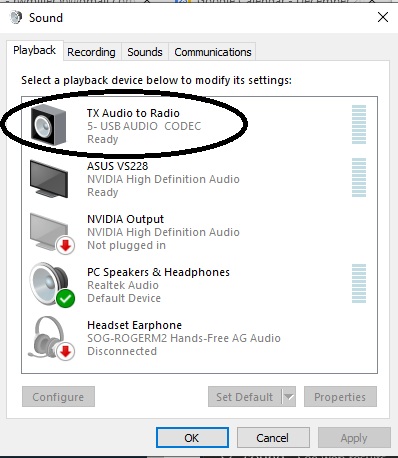
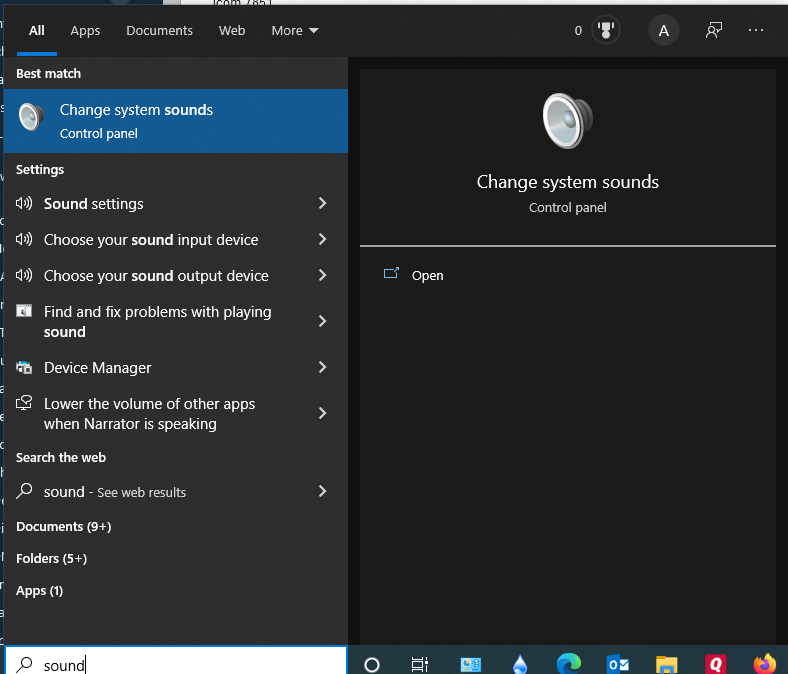

[Date Prev][Date Next][Thread Prev][Thread Next][Date Index][Thread Index]
Re: [NCDXC Chat] Codec Help
On Thursday, December 23, 2021, 11:09:24 AM PST, Roger Miller <ac6bw@yahoo.com> wrote:
Type "Sound" (no quotes) into Windows search bar.Select "Change System Sounds".
Under Playback and Recording tabs, you should see the Codecs.
Mine below is for Yaesu, but Icom is probably similar.
If it is not there, then you likely need to reinstall the drivers.Maybe someone with Icom experience can chime in.
73,RogerAC6BW
On Thursday, December 23, 2021, 11:03:38 AM PST, Chortek, Robert L. <robert.chortek@berliner.com> wrote:
Icom 7851
BobRobert L. Chortek
On Dec 23, 2021, at 11:02 AM, Roger Miller <ac6bw@yahoo.com> wrote:
EXTERNAL EMAIL
Hi, Bob,What is the make/model of your rig?
RogerAC6BW
On Thursday, December 23, 2021, 10:59:26 AM PST, Chortek, Robert L. via Chat <chat@ncdxc.org> wrote:
FT8 has been working fine on windows 10 for years, until today when I had a power outage.
Now the Codecs are missing. I am unknowledgeable about Windows 10 and computers generally, and I’ve spent over an hour trying to find and load the missing codex.
Can someone give me step-by-step instructions as to how to find the codecs and put them in windows 10 so I can get back on FT8 - before I miss another opportunity to work SV/A!
Any help would be tremendously appreciated.
Please feel free to reply directly.
73,
AA6VB
BobRobert L. Chortek_______________________________________________
Chat mailing list
Chat@ncdxc.org
http://mail.ncdxc.org/mailman/listinfo/chat_ncdxc.org


{kind=link}
{kind=link}